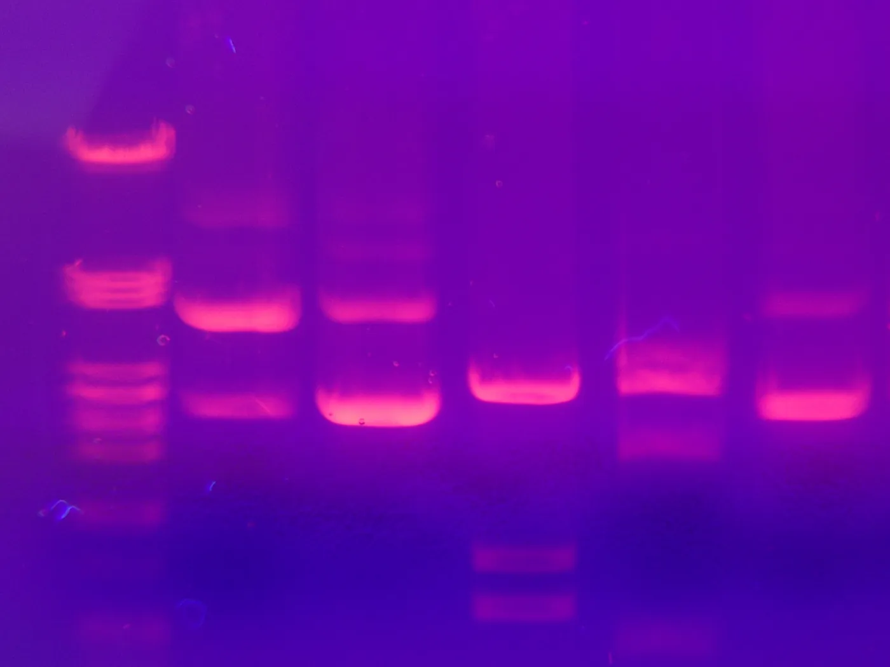
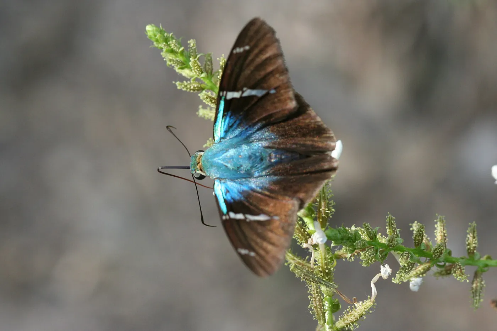
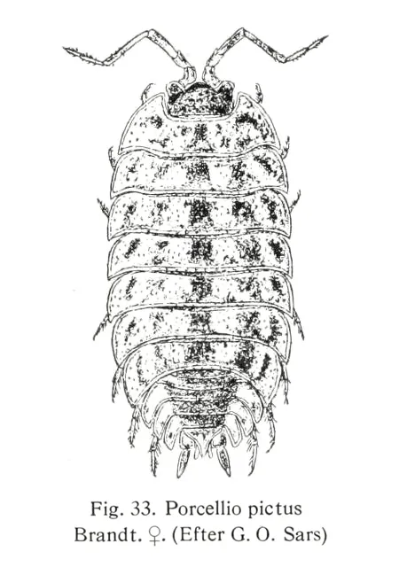
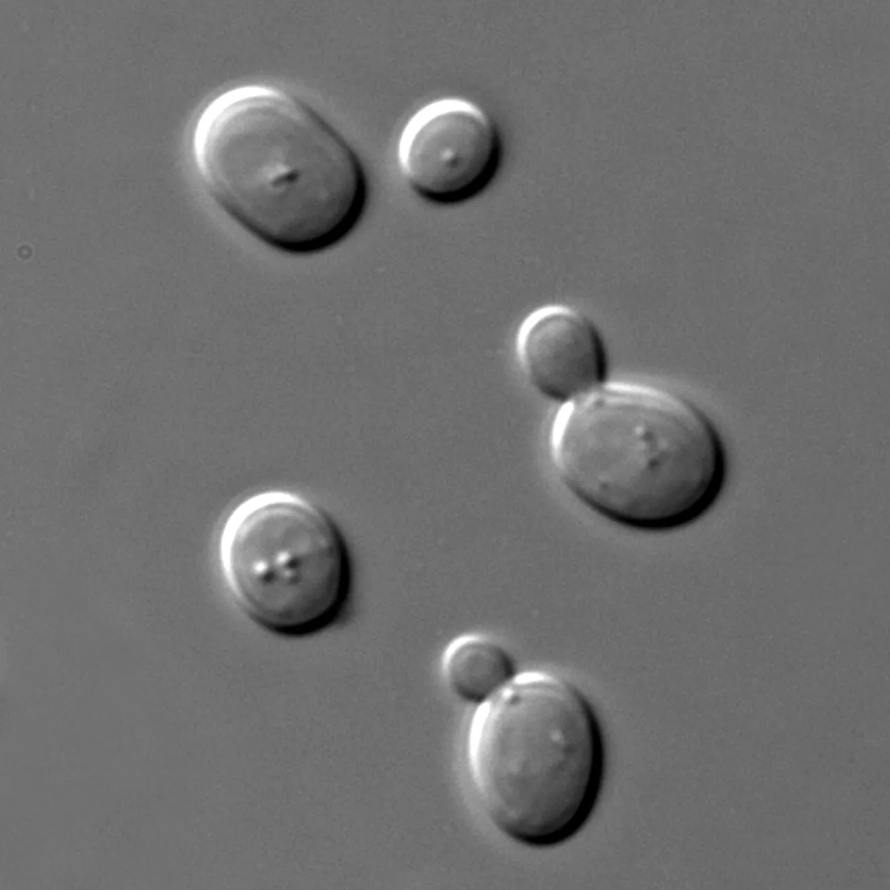
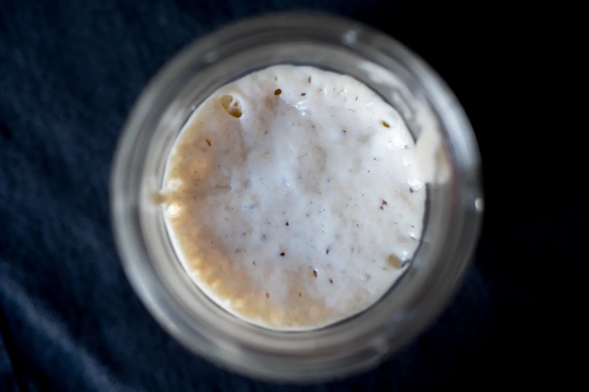

The science, step by step.
Every DNAProved test is built from a handful of well-proven methods. Here is each one, from the DNA in a feather root to the trace on your report, with the research behind it.

DNA is a code in four letters.
Every cell in a bird, a beetle or a yeast carries its full genome, written in just four chemical bases.
DNA is two strands wound into a double helix. Each strand is a chain of bases: adenine (A), thymine (T), guanine (G) and cytosine (C). Across the helix, A always pairs with T and G with C, so each strand is a template for the other. That pairing rule is what lets a lab copy one exact stretch of DNA.
A bird's genome runs to about a billion base pairs. Our tests don't read all of it. Each one targets a short, well-studied stretch, a few hundred bases long, that answers one question: which sex, which species, present or absent.
Because almost every cell carries the full genome, a tiny sample works. The root of a plucked feather, a swab of the beak, or the membrane left in an eggshell holds enough cells.
First, get the DNA out.
Extraction turns a feather, a specimen or a water filter into a few drops of clean DNA.
- Lyse. A buffer with detergent and a protein-digesting enzyme breaks open the cells and frees the DNA.
- Bind. With the right salt, DNA sticks to a silica membrane while most of the rest flows through.
- Wash. Alcohol-based washes rinse away proteins, salts and pigments that would block the next step.
- Elute. A low-salt buffer releases pure DNA from the silica, ready for PCR.
This all happens in a clean pre-PCR area. Copied DNA from finished tests never comes back into that space, because a few stray copies could cause a false result, especially in eDNA work.
PCR copies one gene, fast.
The polymerase chain reaction finds one target among a billion bases and doubles it, again and again.
Two short primers, each about 20 bases, are designed to match the sequence on either side of the target. A heat-stable DNA polymerase, first taken from Thermus aquaticus, a bacterium of hot springs, builds new DNA from those primers. The thermocycler then repeats three temperatures:
- Denature, about 95 °C. The two strands of DNA separate.
- Anneal, about 50 to 60 °C. The primers grip their matching sites.
- Extend, 72 °C. The polymerase builds a new strand from each primer.
Each cycle roughly doubles the target. After 30 cycles, one copy becomes about a billion (230 = 1,073,741,824), enough to see as a band on a gel. In practice the reaction slows near the end as primers and building blocks run out.
Drag the slider or run the cycles to watch the copies double.
Reading DNA by its length.
Gel electrophoresis sorts DNA pieces by size, so a result becomes a picture.
DNA carries a negative charge. Loaded into wells at one end of an agarose gel and put under an electric field, it moves toward the positive end. The gel is a mesh, so short pieces slip through faster and travel farther than long ones.
A ladder of DNA pieces with known lengths runs beside the samples, like a ruler. A stain binds the DNA and glows under blue light, and the bands are photographed. That photograph is what your bird sexing report links to.
Try reading a gel yourself on the home page.
Telling the sexes apart.
In birds it's the female who carries two different sex chromosomes, and one gene gives her away.
Mammals are XX females and XY males. Birds are the other way round: males are ZZ and females are ZW. A gene called CHD1 sits on both the Z and the W chromosome, and the two copies differ in the length of an intron, a stretch of non-coding DNA inside the gene.
Primers such as P2 and P8 match the parts of CHD1 that are the same on both chromosomes, so one PCR copies the Z version and the W version together. On a gel, a male shows one band, because both his copies are Z. A female shows two, Z and W.
Griffiths and colleagues published this test in 1998, estimating that adult females look identical to males in over half of the world's bird species. Fridolfsson and Ellegren added a second primer pair in 1999 that works across most non-ratite birds.
Sanger sequencing, base by base.
For species and microbe IDs we don't just copy the barcode gene. We read every letter of it.
Frederick Sanger's chain-termination method, published in 1977, is still the standard for reading single genes. A copying reaction includes a small share of modified bases that stop the new strand wherever they are added, each type labelled with its own fluorescent dye.
The result is a set of fragments ending at every position. A capillary sorts them by length, one base apart, and a laser reads the colour at the end of each. Plotted in order, the colours become a trace, the chromatogram, with one peak per base.
Clean, tall, evenly spaced peaks mean a confident read. Your report links to this trace, so anyone can check the sequence we matched.
A barcode for every species.
One standard stretch of DNA, read the same way for every specimen, tells species apart.
In 2003 Paul Hebert's team proposed a short region of the mitochondrial gene COI as a barcode for animals. Built from 200 closely related moths and butterflies, their COI profile identified later specimens with 100% success. A year later, barcodes showed that the skipper butterfly Astraptes fulgerator was really at least ten species.
COI works poorly in fungi, so in 2012 an international team chose the ITS region as the fungal barcode. Across all fungi tested it gave the right identification about 73% of the time, among the best of six candidate markers, with near-universal amplification in some groups. Bacteria are identified by their 16S ribosomal RNA gene.
- Match: we compare your sequence with reference databases such as BOLD and GenBank.
- Percent identity: how closely it matches. Very high identity usually means the same species, but the line differs between groups, so we report the number and what it means.
- No match: many hobby isopods are undescribed. We say so, and add verified founder stock to our own reference library.


DNA left behind in water.
Fish, mussels, frogs and plants shed DNA into the water around them. A filter can catch it.
Skin cells, mucus and waste leave traces of DNA in every pond and lake. Filtering a measured volume of water captures those traces, and a PCR built for one species detects whether its DNA is there. In 2008 Ficetola and colleagues showed it could find invasive American bullfrogs from water samples alone.
Real-time PCR (qPCR) watches the copying happen. A probe glows as copies build up, and the cycle where the glow crosses a threshold, the Ct value, shows the target is present: the earlier it crosses, the more DNA was in the sample. Each sample runs in triplicate beside field and lab blanks.
A 2021 meta-analysis found eDNA is generally more sensitive and cheaper than traditional surveys, though the advantage varies by animal group and few studies measure it rigorously.
The microbes in a ferment.
Beer, kombucha and sourdough are run by yeast and bacteria you can't tell apart by eye.
We grow what's in your sample, pick single colonies and identify each by DNA: the ITS region for yeast and other fungi, and the 16S ribosomal RNA gene for bacteria. Each is Sanger sequenced and matched against reference databases.
In brewing, lactic acid bacteria such as Lactobacillus brevis and Pediococcus damnosus are among the best-known spoilers, because some strains tolerate the antibacterial compounds in hops. Knowing exactly what's growing tells you whether a sour note is a problem or a feature.
Sourdough starters are communities of wild yeast and lactic acid bacteria. Each batch of our verified starter is barcoded, and its certificate names the microbes we found.


What DNA can't tell you.
Good science says where its answers stop. These are ours.
- Sex isn't health. A sexing result says nothing about whether a bird is healthy or fertile.
- A match depends on the database. If a species was never sequenced, no lab can name it from DNA alone; we report the closest match and say how close.
- Presence isn't abundance. eDNA shows a species' DNA was in the water, not how many animals live there.
- Contamination is the main risk. Separate pre- and post-PCR areas, blanks in every run and repeat-on-failure rules are how we manage it.
- Accuracy claims need data. We validate each test on samples of known identity before offering it, and publish the summary.
References.
- Griffiths R, Double MC, Orr K, Dawson RJG (1998). A DNA test to sex most birds. Molecular Ecology 7: 1071–1075. doi:10.1046/j.1365-294x.1998.00389.x
- Fridolfsson A-K, Ellegren H (1999). A simple and universal method for molecular sexing of non-ratite birds. Journal of Avian Biology 30: 116–121.
- Waldenström J, Ottosson U (2000). The accuracy of field sex determination in the Common Whitethroat Sylvia c. communis. Ornis Svecica 10: 67–70. journals.lub.lu.se
- Dobreva et al. (2021). Sex identification in embryos and adults of Darwin's finches. PLoS ONE. PMC7935298
- Hebert PDN, Cywinska A, Ball SL, deWaard JR (2003). Biological identifications through DNA barcodes. Proceedings of the Royal Society B 270: 313–321. PMC1691236
- Hebert PDN, Penton EH, Burns JM, Janzen DH, Hallwachs W (2004). Ten species in one: DNA barcoding reveals cryptic species in the neotropical skipper butterfly Astraptes fulgerator. PNAS 101: 14812–14817. doi:10.1073/pnas.0406166101
- Schoch CL et al. (2012). Nuclear ribosomal internal transcribed spacer (ITS) region as a universal DNA barcode marker for Fungi. PNAS 109: 6241–6246. doi:10.1073/pnas.1117018109
- Goodwin ZA, Harris DJ, Filer D, Wood JRI, Scotland RW (2015). Widespread mistaken identity in tropical plant collections. Current Biology 25: R1066–R1067. doi:10.1016/j.cub.2015.10.002
- Luque GM, Donlan CJ (2019). The characterization of seafood mislabeling: a global meta-analysis. Biological Conservation 236: 556–570. doi:10.1016/j.biocon.2019.04.006
- Sanger F, Nicklen S, Coulson AR (1977). DNA sequencing with chain-terminating inhibitors. PNAS 74: 5463–5467.
- Saiki RK et al. (1988). Primer-directed enzymatic amplification of DNA with a thermostable DNA polymerase. Science 239: 487–491.
- Ficetola GF, Miaud C, Pompanon F, Taberlet P (2008). Species detection using environmental DNA from water samples. Biology Letters 4: 423–425.
- Fediajevaite J, Priestley V, Arnold R, Savolainen V (2021). Meta-analysis shows that environmental DNA outperforms traditional surveys, but warrants better reporting standards. Ecology and Evolution 11: 4803–4815. PMC8093654
- Sakamoto K, Konings WN (2003). Beer spoilage bacteria and hop resistance. International Journal of Food Microbiology 89: 105–124.
Put the science to work.
Every one of these methods sits behind a DNAProved report, with the evidence attached.